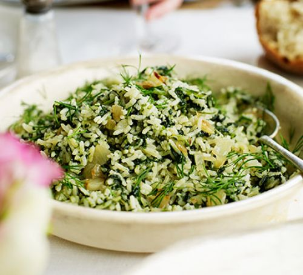

Ingredients
1.Rice - 1.5 cups
2.Moong Dal - 1 cup
3.Spinach - 1 bunch (chopped)
4.Onion - 1/4 (finely chopped)
5.Garlic - 3 (minced)
6.Ginger - 1" piece (minced)
7.Tomato - 1 (chopped)
8.Green Chillies - 2 (minced)
9.Turmeric
Powder - 1/4 tsp
10.Goda Masala - 1 tsp
11.Ghee/ Oil - 1 tblsp
12Cumin Seeds - 1 tsp
13.Salt - to taste
Method
1. Wash and soak the rice and dal for 10-15 minutes.
2. Heat oil in a pressure cooker and add the cumin seeds.
3. Next add the onion, garlic and ginger. Fry till it becomes soft.
4. Add the tomato, green chilly, goda masala, turmeric powder and fry for a minute.
5. Next add the chopped spinach and cook till it wilts.
6. Add the rice, dal, 5 cups of water and required salt.
7. Pressure cook for 2-3 whistles or transfer to a rice cooker and cook till done.
8. Serve this warm and comforting meal with some papad and pickle.